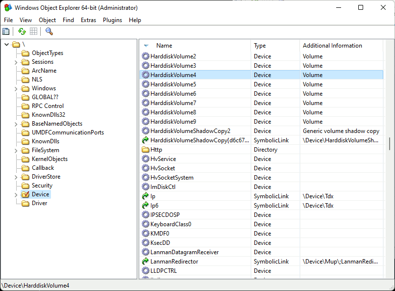
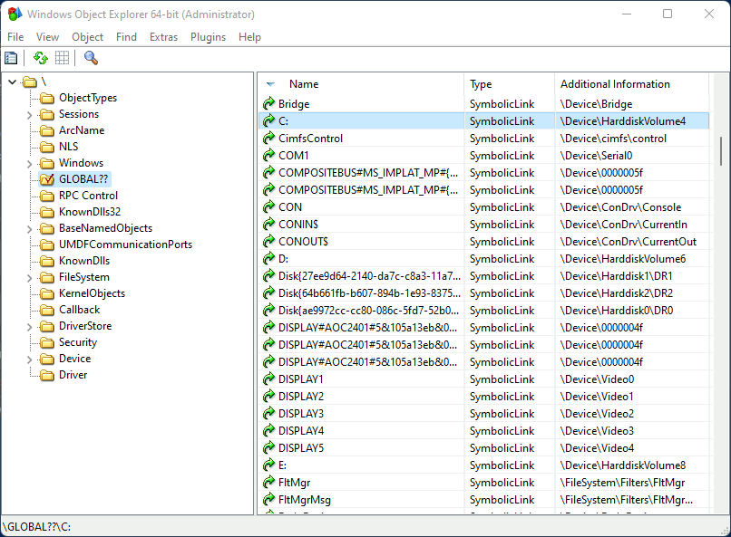

Overview
Win32 Paths
Win32 paths are a living history of Microsoft OSes from DOS 1.0 through Windows 95/NT and modern Windows.
Absolute Win32 paths
| Type | Examples |
|---|---|
| Drive | C:\Windows |
| UNC | \\server\share\ |
| Device | \\.\PIPE\name |
| Verbatim | \\?\C:\Windows\\?\UNC\server\share\\\?\PIPE\name |
Relative Win32 paths
| Type | Examples |
|---|---|
| Path Relative | file.ext.\file.ext..\file.ext |
| Root Relative | \file.ext |
| Drive Relative | D:file.ext |
Path character encoding
Paths are UTF-16 strings. Windows allows using other encodings (including UTF-8) but these are all lossily converted to and from UTF-16.
Disallowed characters
Filesystem drivers typically disallow the following characters in path components:
| Disallowed | Description |
|---|---|
\ / | Path seperators |
: | Dos drive and NTFS file stream separator |
* ? | Wildcards |
< > " | DOS wildcards |
| | Pipe |
NUL to US | ASCII control codes; aka Unicode C0 control codes (U+0000 to U+001F inclusive). Note that DEL (U+007F) is allowed. |
Note that path separators and wildcards must be disallowed in normal filesystems otherwise some Win32 APIs will be unusable in some situations.
Special Dos Device Names
For legacy reasons, some filenames may be interpreted as DOS devices. This means, for example the path "AUX" will be rewritten as \\.\AUX.
The following are special dos device names:
AUXCONCONIN$CONOUT$COM1,COM2,COM3,COM4,COM5,COM6,COM7,COM8,COM9,COM²,COM³,COM¹LPT1,LPT2,LPT3,LPT4,LPT5,LPT6,LPT7,LPT8,LPT9,LPT²,LPT³,LPT¹NULPRN
Note that these names are case-insensitive though canonically they're uppercase.
Under the hood
Win32 paths are emulated on top of NT kernel paths. An NT path looks similar to a Unix path, except for the directory separator. For example:
\Device\HarddiskVolume2\directory\subdir\file.ext
These types of paths cannot be used directly in the Win32 API but can make themsevles apparent in other ways.
Details
This section contains everything you ever wanted to know about Windows paths but were afraid to ask. Note that this discusses internal details that may be subject to change. It is intended to document the current state of path parsing in Windows and so not every detail can be relied on to always be true.
I'll start with NT kernel paths. These aren't usually used directly from user space but I promise they're important to fully understanding Win32 paths.
NT Kernel
If everything in Unix is a file, then everything in NT is an object1. And if that object is named then it can be accessed via the NT kernel's Object Manager.
For people using the Win32 APIs this is technically an implementation detail but, when it comes to file paths at least, it's a very leaky one. Understanding how paths are handled at this level will help understand Win32 paths as well.
This isn't quite true for either.
NT Paths
The kernel uses paths to query named objects in the object manager. These look similar to a UNIX path. For example:
\Device\HarddiskVolume2
A path is made up of "components", separated by a \. Each component represents a directory name or a file name. In NT, components are arrays of 16-bit code units. Any character except \ (0x005C) is allowed in component names. Even NULL (0x0000) is allowed.
Starting a path with a \ indicates that it starts from the root. It's an absolute path.
Relative paths
If a directory is opened, kernel APIs allow you to open sub paths based on that directory. For example if you open the directory:
\Device\HarddiskVolume2\directory
You can then use the directory handle to open a relative path, such as:
subdir\file.ext
So the absolute path of the file will be:
\Device\HarddiskVolume2\directory\subdir\file.ext
This is the only type of relative path understood by the kernel. In the NT kernel . and .. have no special meaning and can be regular files or directories (but almost certainly shouldn't be).
Device paths
When resolving paths the Object Manager itself is actually only responsible for finding the devices it manages. You can see this using WinObjEx64. Note that in the path \Device\HarddiskVolume4 is not a directory.

What happens is the Object Manager resolves the device path and then the rest of the path is given to the device to resolve itself. For example, given the path:
\Device\HarddiskVolume2\directory\subdir\file.ext
The Object Manager will find \Device\HarddiskVolume2 and pass it the path \directory\subdir\file.ext which the device may resolve to a resource. Alternatively the device can give a new path back to the Object Manager and ask it to "reparse" the path (i.e. discard the old path and resolve the new path).
In effect this means that devices are free to resolve paths however they like. However, filesystem drivers should usually stick to filesystem conventions even though this is not enforced by the kernel. If they do not then users of the Win32 APIs may be unable to properly use the filesystem.
Object Manager Symlinks
Device paths such as \Device\HarddiskVolume2 are all very well but often you want a more meaningful or consistent name. To this end NT supports symbolically linking from one path to another. Many of these meaningful names will be collected into a single NT folder: \??.
For example, to access a drive by its GUID you can use:
\??\Volume{a2f2fe4e-fb6b-4442-9244-1342c61c4067}
Or you can use a friendly drive name:
\??\C:
The : here has no special meaning. It's just part of the symlink name.
The \?? folder
The \?? folder is not actually a normal directory. Instead it's a virtual folder that merges two directories:
- The
\GLOBAL??directory. This contains symlinks common to all usesr.  - A per-user
DosDevicesdirectory. This contains the user's symlinks so the exact path depends on the user. In the following image it's\Sessions\0\DosDevices\00000000-00053ce2
Security
Win32 paths such as:
R:\path\to\file.ext
Will resolve to the NT path:
\??\R:\path\to\file.ext
As R: is symlink, this means that there is a symlink at the root of the win32 path. Users do not need any special permission to add or remove symlinks (aka "Dos Devices"). The potential security implications are somewhat mitigated by the fact that users can only affect their own Dos Devices directory and not \Global?? or that of other users. That said, paths are just strings so can easily cross user boundaries (e.g. when a process impersonates another user so it can carry out operations in the context of that user).
Strings
Encoding
In Windows, all paths are treated as Unicode strings. However the Win32 API provides convinence functions to automatically convert the system encoding to UTF-16 (and vice versa). This helps to avoid the Mojibake problem by only having one canonical encoding. The UTF-16 conversion happens before everything else so interpreting paths only needs to operate on UTF-16 strings.
UnicodeString
The NT kernel uses UTF-16 strings. Their definition is conceptually similar to Rust's Vec<u16>:
#![allow(unused)] fn main() { struct UnicodeString { length: u16, capacity: u16, buffer: *mut u16, } }
Note that these strings can contain nulls. However, if they do then they will not be useable by the Windows API.
Unlike Rust's String, the kernel will not check that the UnicodeString struct contains valid UTF-16. This means that it's possible for malicious applications to create file names with isolated surrogates (i.e. invalid Unicode).
Windows API Strings
In the Win32 API there are generally two types of strings that applications can choose to use. Both are NULL terminated.
- Multibyte:
*mut u8 - Wide:
*mut u16.
Multibyte strings are in whichever encoding is set by the user or system. Windows will automatically convert to and from a UTF-16 UnicodeString as needed. If a Multibyte string contains bytes that are invalid for that encoding then they may be replaced when converting to UTF-16.
Recent versions of Windows also have the UTF-8 local encoding which, like other local encodings, is lossily converted to and from UTF-16.
Wide strings are UTF-16 and are put into a UnicodeString struct without being checked, except to get the length. So again it's possible for the string to contain invalid Unicode.
Filesystems
While the kernel allows almost anything in component names, filesystems may be more restrictive. For example, an NT path can include a component called C: but a filesystem may not allow you to create a directory with that name.
Microsoft's filesystem drivers will typically not allow the following characters in component names:
| Disallowed | Description |
|---|---|
\ / | Path seperators |
: | Dos drive and NTFS file stream separator |
* ? | Wildcards |
< > " | DOS wildcards |
| | Pipe |
NUL to US | ASCII control codes; aka Unicode C0 control codes (U+0000 to U+001F inclusive). Note that DEL (U+007F) is allowed. |
Each component in a path is currently limited to 255 UTF-16 code units. However, it may not be safe to rely on this.
Filesystem paths may or may not be case sensitive. In Windows they are typically case insensitive but this cannot always be assumed. In some circumstances case sensitivity can even differ on a per directory basis.
While filesystems could be more relaxed about valid characters, path separators (\/) and wildcards (*?<>") must be disallowed in normal filesystems. Otherwise some Win32 APIs will be unusable in some situations.
File streams
The above disallowed characters applies to component names but NTFS understands an additional syntax: file streams. Each file (including directories) can have multiple streams of data. You can address them like so:
file.ext:stream_name
Which is also equivalent to:
file.ext:stream_name:$DATA
The stream name cannot contain a NULL (0x0000) or have the characters \, /, :. Like path components, it's limited to 255 UTF-16 code units.
The $DATA part of the stream identifier is a stream type. Valid types are assigned by Microsoft and always start with a $. If not specified, the type defaults to $DATA.
Directories also have a special directory stream type and will default to it if no stream name is given. For example:
dir_name
Is equivalent to:
dir_name:$I30:$INDEX_ALLOCATION
Special filesystems
There are some special devices which accept paths but aren't true filesystem. For example, the NUL device will claim every path exists (even those that are usually invalid). The PIPE device simply treats paths strings. It does not have actual directories, although it does treat some prefixes specially (e.g. LOCAL\.
Win32 Paths
The Win32 API is built as a layer on top of the NT kernel. It implements an API that was originally built for those familiar with Win16 and DOS so it doesn't directly deal with NT paths. Instead it converts Win32 paths to NT paths before calling the kernel.
Essentially Win32 paths are a user-space compatibility layer.
Absolute Win32 paths
All absolute paths start with a root. On *nix the root is /. For the NT kernel it's \. In contrast, Win32 has four types of root and they're all longer than one character.
C:\,D:\,E:\, etc. The first letter is a (case insensitive) drive letter that can be any ascii letter fromAtoZ.\\server\share\whereserveris the name of the server andshareis the name of the shared directory. It is used to access a shared directory on a server therefore you must always specifiy both a server name and share name.\\.\. These are typically used to access devices other than drives or server shares (e.g. named pipes). So they are not usually filesystem paths.\\?\. These can be used to access any type of device.
The following table shows each type and an example of how the Win32 root is converted to a kernel path.
| Type | Win32 path | Kernel path |
|---|---|---|
| Drive | C:\Windows | \??\C:\Windows |
| UNC | \\server\share\file | \??\UNC\server\share\file |
| Device | \\.\PIPE\name | \??\PIPE\name |
| Verbatim | \\?\C:\Windows\\?\UNC\server\share\file\\?\PIPE\name | \??\C:\Windows\??\UNC\server\share\file\??\PIPE\name |
From the table above it looks like device paths and verbatim paths work the same way. However, that's only because I left off a column: the namespace. The namespace determines what happens to the part of the path after the root.
| Type | Namespace | Example |
|---|---|---|
| Drive | Win32 | C:\Windows |
| UNC | Win32 | \\server\share\file |
| Device | Win32 | \\.\PIPE\name |
| Verbatim | NT | \\?\C:\Windows\\?\UNC\server\share\file\\?\PIPE\name |
The next two sections will explain the effects the namespace has.
NT namespace
Paths in the NT namespace are passed almost directly to the kernel without any transformations or substitutions.
The only Win32 paths in the NT namespace are verbatim paths (i.e. those that start with \\?\). When converting a verbatim path to a kernel path, all that happens is the root \\?\ is changed to the kernel path \??\. The rest of the path is left untouched. See NT Kernel Paths for more on kernel paths.
Note that this is the only way to use kernel paths in the Win32 API. If you start a path with \??\ or \Device\ then it can have very different results.
Win32 namespace
This section applies to all Win32 paths except for verbatim paths (those that start with \\?\).
When converting a Win32 path to a kernel path there are additional transformations and restrictions that are applied to DOS drive paths, UNC paths and Device paths. Some of these transformations are useful while others are an unfortunate holdover from DOS or early Windows.
Win32 namespaced paths are restricted to a length less than 260 UTF-16 code units. This restriction can be lifted on newer versions of Windows 10 but it requires both the user and the application to opt in.
When paths are in this namespace, one of two transformations may happen:
- If the path is a special DOS device name then a device path is returned. See Special Dos Device Names for details.
- Otherwise the following transformations are applied:
- First, all occurences of
/are changed to\. - All path components consisting of only a single
.are removed. - A sequence containing more than one
\is replaced with a single\. E.g.\\\is collapsed to\. - All
..path components will be removed along with their parent component. The Win32 root (e.g.C:\,\\server\share,\\.\) will never be removed. - If a component name ends with a
.then the final.is removed, unless another.comes before it. Sodir.becomesdirbutdir..remains as it is. I'm sure there's a reason for this. - For the filename only (aka the last component), all trailing dots and spaces are stripped.
- First, all occurences of
For example, this:
C:/path////../../../to/.////file.. ..
Is changed to:
C:\to\file
Which becomes the kernel path:
\??\C:\to\file
This transformation all happens without touching the filesystem.
Relative Win32 paths
Relative paths are usually resolved relative to the current directory. The current directory is a global mutable value that stores an absolute Win32 path to an existing directory. The current directory only supports DOS drive paths (e.g. C:\) and UNC paths (e.g. \\server\share). Using any other path type when setting the current directory is liable to break relative paths therefore verbatim paths (\\?\) should not be used.
There are three categories of relative Win32 paths.
| Type | Examples |
|---|---|
| Path Relative | file.ext.\file.ext..\file.ext |
| Root Relative | \file.ext |
| Drive Relative | D:file.ext |
Although Path Relative forms come in three flavours there are really only two. file.txt is interpreted exactly the same way as .\file.txt (see Win32 namespace). However, the .\ prefix can help to avoid ambiguities introduced by drive relative paths.
Drive Relative paths are interpreted as being relative to the specified drive's current directory (note: usually only the command prompt has per drive current directories). Root relative are relative to the root of the current directory.
Drive Relative and Root Relative paths should be avoided whenever possible. Developers and users rarely understand how they're resolved so their results can be surprising. Additionally the Drive Relative paths syntax introduces ambiguity with file streams.
Special DOS Device names
In the Win32 namespace a path that matches the name of a special DOS device may be resolved to that device instead of to a file path. For example, that path:
COM1
Will resolve to:
\\.\COM1
Which becomes the kernel path:
\??\COM1
These are the DOS device names that get the path replaced:
AUXCONCONIN$CONOUT$COM1,COM2,COM3,COM4,COM5,COM6,COM7,COM8,COM9,COM²,COM³,COM¹LPT1,LPT2,LPT3,LPT4,LPT5,LPT6,LPT7,LPT8,LPT9,LPT²,LPT³,LPT¹NULPRN
However the algorithm for matching device names is not as simple as a direct comparison and also depends on the OS version.
Windows 11
Windows 11 greatly simplified how these device names are handled compared to earlier versions of Windows.
To test if a path matches a special dos device, it's as if the following steps were taken before comparing:
- ASCII letters are uppercased
- trailing dots (
.) and spaces (
So cOm1.. .. is interpreted as \\.\COM1 but .\COM1 isn't.
The one remaining complication is the NUL device. If this appears in the filename (aka last component) of an absolute DOS drive or a relative path then the filename itself will be compared using the steps above. But this only happens if the parent directory actually exists thus it's as though every directory has a virtual NUL file.
So the following paths are interpreted as \\.\NUL if their parent directory exists:
C:\path\to\nul
Again, this only applies to NUL so C:\path\to\COM1 will be treated as a normal file path.
Windows 10 and earlier
If a path is an absolute DOS drive or a relative path and if a filename (aka the final component) matches one of the special DOS device name then the path is ignored and replaced with that DOS device. For example:
C:\path\to\COM1
Gets translated to:
\\.\COM1
It's as if the following steps were applied to the file name before comparing:
- ASCII letters are uppercased
- anything after a
.and the.itself are removed - any trailing spaces (
For example, these filenames are all interpreted as \\.\COM1:
- "
COM1.ext" - "
COM1" - "
COM1 . .ext"
When opening a file path such as C:\Test\COM1, it will only resolve to \\.\COM1 if the parent directory C:\Test exists. Otherwise opening the file will fail with an invalid path error.